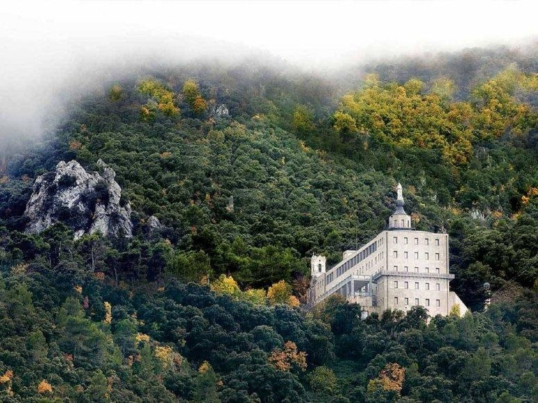

La Comunitat Valenciana amaga una diversitat de paisatges sorprenent en poc espai: aiguamolls i arrossars, penyals que s'endinsen a la Mediterrània, gorges d'aigua turquesa i boscos d'alzines centenàries. Ací en tens una petita mostra, de nord a sud.

L'Albufera de València
València
Un dels aiguamolls més importants d'Europa, envoltat d'arrossars i famós per les seues postes de sol sobre l'aigua.

Els ponts penjants de Chulilla
València
Els congosts del riu Túria, amb passarel·les que travessen aigües turqueses entre altes parets de roca.

El castell de Peníscola
Castelló
Una península fortificada que s'endinsa a la Mediterrània, coneguda popularment com «la ciutat en la mar».

Montanejos i el riu Millars
Castelló
Aigües termals a l'aire lliure, enmig d'un interior muntanyós ple de barrancs i fonts naturals.

El Penyal d'Ifac, Calp
Alacant
Un imponent penyal de 332 metres que s'alça de sobte just damunt del mar, a la costa nord d'Alacant.

La Font Roja, Alcoi
Alacant
Un dels boscos millor conservats de la Comunitat Valenciana, amb alzinars i fagedes centenàries.